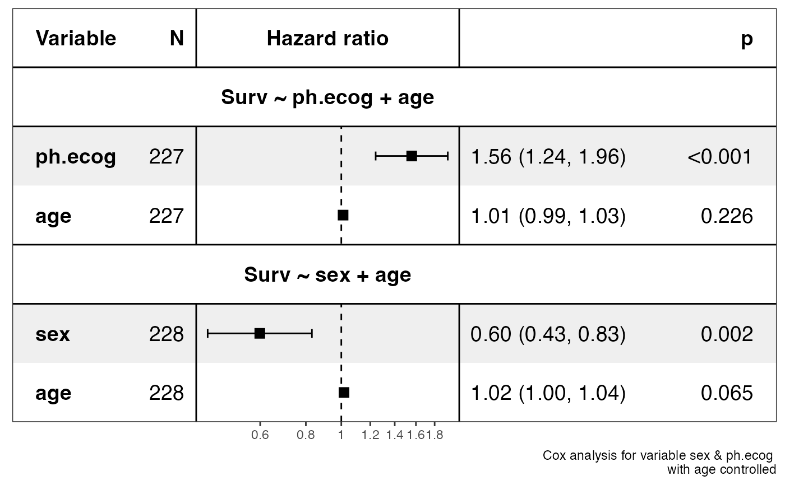
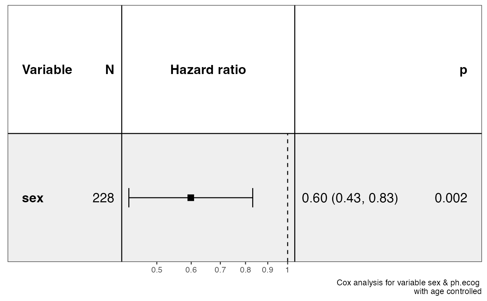

This is a wrapper of function ezcox, get_models and show_models. If focus on generating forest plot easily and flexibly.
show_forest( data, covariates, controls = NULL, time = "time", status = "status", merge_models = FALSE, model_names = NULL, vars_to_show = NULL, drop_controls = FALSE, model_dir = file.path(tempdir(), "ezcox"), ... )
Arguments
| data | a |
|---|---|
| covariates | column names specifying variables. |
| controls | column names specifying controls. |
| time | column name specifying time, default is 'time'. |
| status | column name specifying event status, default is 'status'. |
| merge_models | if 'TRUE', merge all models and keep the plot tight. |
| model_names | model names to show when |
| vars_to_show | default is |
| drop_controls | works when |
| model_dir | a path for storing model results. |
| ... | other arguments passing to |
Value
a ggplot object
Examples
#>#>#>#>#>#>#>#>#>#>#>#>#>#>#>#>show_forest(lung, covariates = c("sex", "ph.ecog"), controls = "age", merge_models = TRUE, drop_controls = TRUE )#>#>#>#>#>#>#>#>#>#>#>show_forest(lung, covariates = c("sex", "ph.ecog"), controls = "age", merge_models = TRUE, vars_to_show = "sex" )#>#>#>#>#>#>#>#>#>